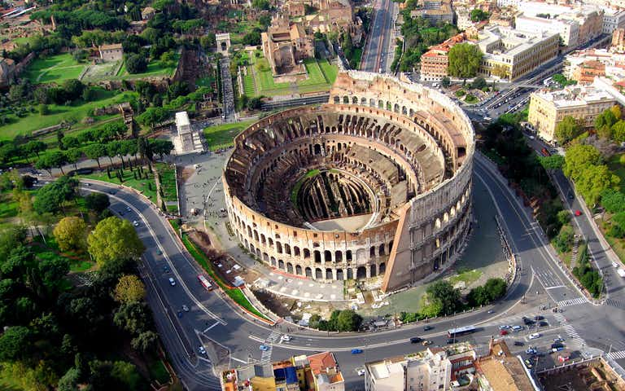

Lisabona
Barcelona
Roma

Cele mai bune hoteluri din Roma ->directionare pe Booking
Alte cateva locuri de vizitat in Roma:
1. Pantheon
2. Ostia Antica
3. Muzeele de arta
4. La Settimana dei Beni Culturali
5. Castelul Sant'Angelo
6. Explorati catacombele
Preturile hotelurilor:
Va puteti astepta sa platiti pana la 13 euro pe noapte pentru un dormitor cu 4-6 paturi si aproximativ 45-50 euro pentru o camera privata. Camerele private nu sunt o afacere buna aici si as recomanda sa mergeti la un hotel daca doriti un spatiu privat.
O noapte intr-un hotel buget de 2 stele intr-o camera pentru doua persoane incepe in jur de 38 euro. Am stat in unele dintre cele mai frumoase apartamente locale folosind Airbnb. Pe Airbnb, puteti gasi camere comune incepand de la aproximativ 13 euro pe noapte si puteti inchiria apartamente intregi incepand cu aproximativ 40 euro pe noapte.
Costul mediu al mancarii:
Italia este cunoscuta pentru bucataria sa: paste proaspete, paine, rosii, pizza, gelato si vin. Majoritatea meselor din restaurant vor costa in jur de 25 euro de persoana. In punctele fierbinti turistice, se adauga aproximativ 10 euro. Mancarurile rapide, cum ar fi pizza, panini si gustari usoare, vor costa 5-7 euro. Fast-food-ul va costa 9 euro pentru o masa. Pentru mancare mai ieftina, mergeti la Trastevere, cartierul studentesc sau ajungeti intr-o piata si cumparati-va propriile ingrediente.